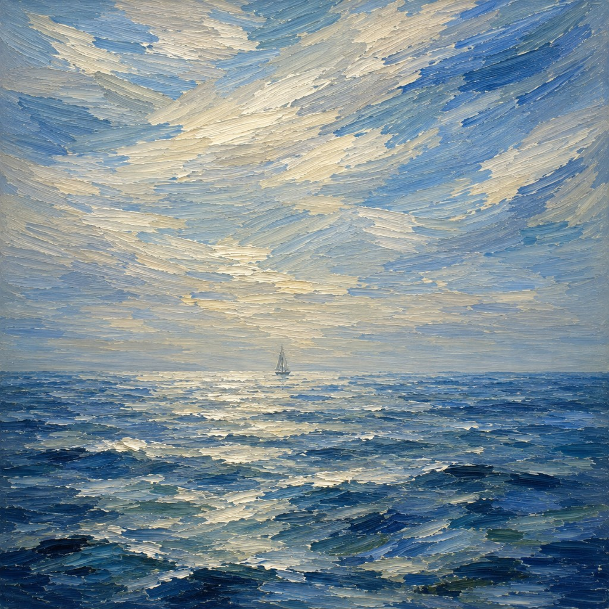

The Rise of the Strategic Doer
The diminishing gap between idea and done.

For years, being a non-technical founder came with a constraint: you could have the idea, but you needed someone else to build it.
That constraint shaped everything downstream of it. It's why "I just need a technical co-founder" became the most repeated sentence in startup world, and why so many people said it for years without ever finding one.
Think about what that search actually cost. You had to identify someone with the right skills, convince them your idea was worth their next two years, negotiate equity with a person you'd known for six weeks, and then translate everything you understood about the customer into something they could build from. The translation was the worst part. You'd sat through forty sales calls. They'd sat through none. What reached the product was a summary of a summary.
Meanwhile the clock ran. Six months to find someone, three more to ship anything. By the time the first version existed, the insight that started it was nine months stale and you'd never once tested it against a real user.
Most ideas didn't fail in that stretch. They just never got out of it.
That constraint has largely disappeared
AI coding tools make it possible to go from an idea to a working prototype in minutes. Describe what you want, connect a database, create a landing page, and ship something real without giving up a single point of equity.
But the speed isn't the important part. Plenty of people have written that version of this post already.
The important part is that the translation layer disappeared. The person who understands the customer is now the person with hands on the product. There's no summary, no handoff, no meeting where the insight gets compressed into a ticket. What you learned on a call Tuesday morning can be in the product by Tuesday night, without passing through anyone.
That changes more than who writes the code. It changes how companies start, and it changes who's positioned to start them.
So, what is a strategic doer?
Someone who can see the whole picture and move the pieces themselves.
They can reason about where the value is, who the customer is, and what to build first. Then they ship it. Not brief it. Not scope it. Ship it.
Their strategist half knows what's worth doing. It holds a point of view about the market and has enough discipline to kill a good idea when a better one shows up.
Their doer half closes the loop and figures it out: a working product by Thursday, 10 customer calls, the landing page, the campaign, the pricing rewrite on Sunday because of something they heard on Friday.
Neither half is new. But the ability for the same person to do both is.
For most of the last two decades, those halves lived in different job descriptions, different departments, and often different buildings. That wasn't a failure of imagination. It was a rational response to the fact that doing was expensive. When building requires scarce specialized labor, you organize around protecting that labor, and you accept the coordination cost as the price of admission.
Take away the expense and the whole structure stops making sense.
Their real edge is loop count
Ask a strategic doer why they win and they'll usually say speed. That's right, but not in the way most people mean it. It isn't that they work faster. It's that they finish more loops.
In a conventional company, an insight becomes a document. The document enters a prioritization process. The process produces a ticket. The ticket enters a sprint. Eight weeks later, something ships that's a third-generation photocopy of the original idea, and by then nobody remembers which customer said the thing that started it.
A strategic doer hears something on a Tuesday call, changes the product Tuesday night, and tests it Wednesday. Ten loops in the time the org runs one.
This matters more than it sounds, because being right about a market is not mostly a function of intelligence. It's a function of iterations. The person who has been wrong nine times in public and corrected each time will beat the person with the better opening hypothesis nearly every time. Loop count is the variable almost nobody optimizes for, and it's the one that's suddenly available to a single person.
What they're not
Not generalists who are mediocre at everything. The good ones are genuinely deep in one or two areas, usually the customer, and functional across the rest. Functional is enough now. It wasn't before.
Not hustlers. There's a whole genre of person who ships constantly and never converges, because nothing they build sits downstream of a real point of view. Doing without a thesis is motion. Strategy without doing is a deck. The pairing is the entire thing, and each half without the other is a familiar way to waste a year.
Not necessarily founders. Some of the most valuable strategic doers work inside large companies, where one of them functions as a zero-to-one department and is worth a great deal more than the org chart around them suggests.
Where it breaks
This doesn't scale forever. At some point you need skilled engineers, real infrastructure, and someone who knows what happens when the database hits forty million rows. The advantage lives in the first mile and degrades as the thing gets bigger.
But the first mile is where most ideas used to die. Not in scaling, not in competition, but in the long quiet stretch between having the idea and having anything at all. That stretch is now days instead of quarters, and that's the whole shift.
The excuse is gone
"I just need a technical co-founder" is now "I've decided not to start."
That's not a criticism. It's just what the sentence means in 2026. The constraint it referred to was real for a long time, and then it wasn't, and the language took a while to catch up.
If you've been sitting on an idea, this is the easiest it's ever been to find out whether you're onto something. The only remaining cost is a weekend and the risk of learning you were wrong.
Turn ideas into something.
The Club is built for strategic doers — the people who see the whole picture and move the pieces themselves.